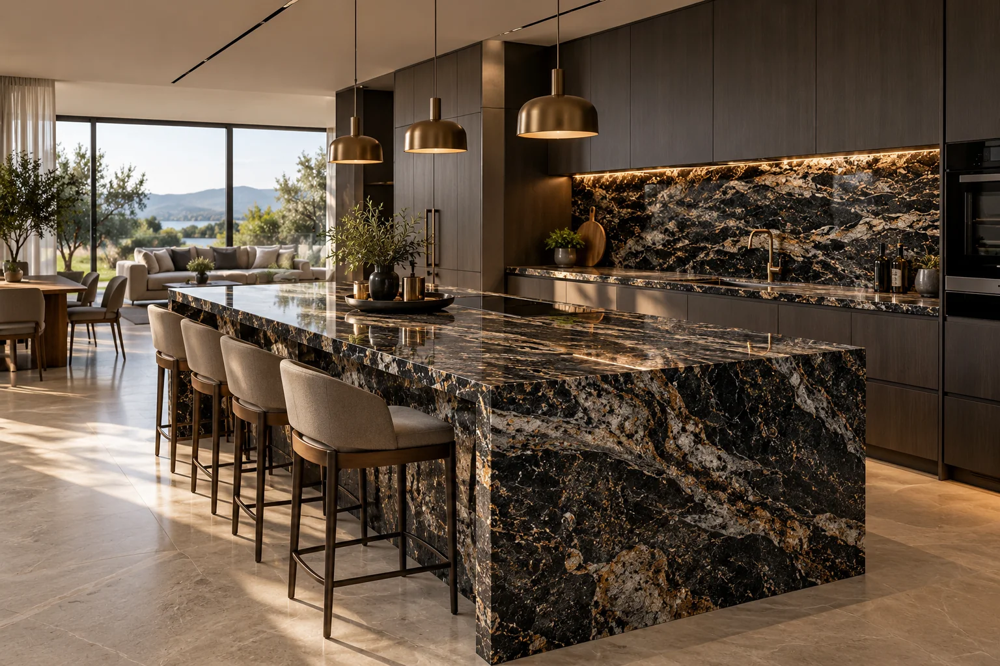
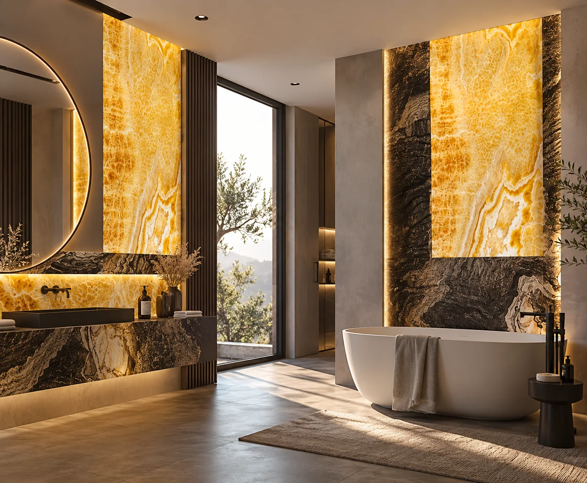
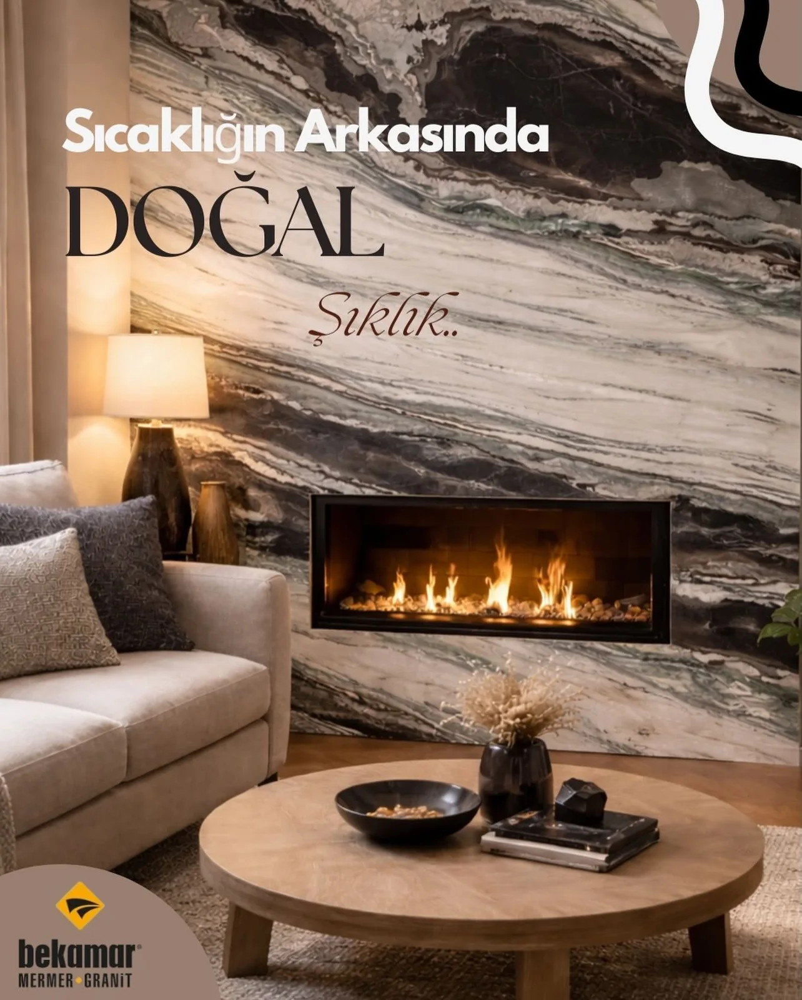
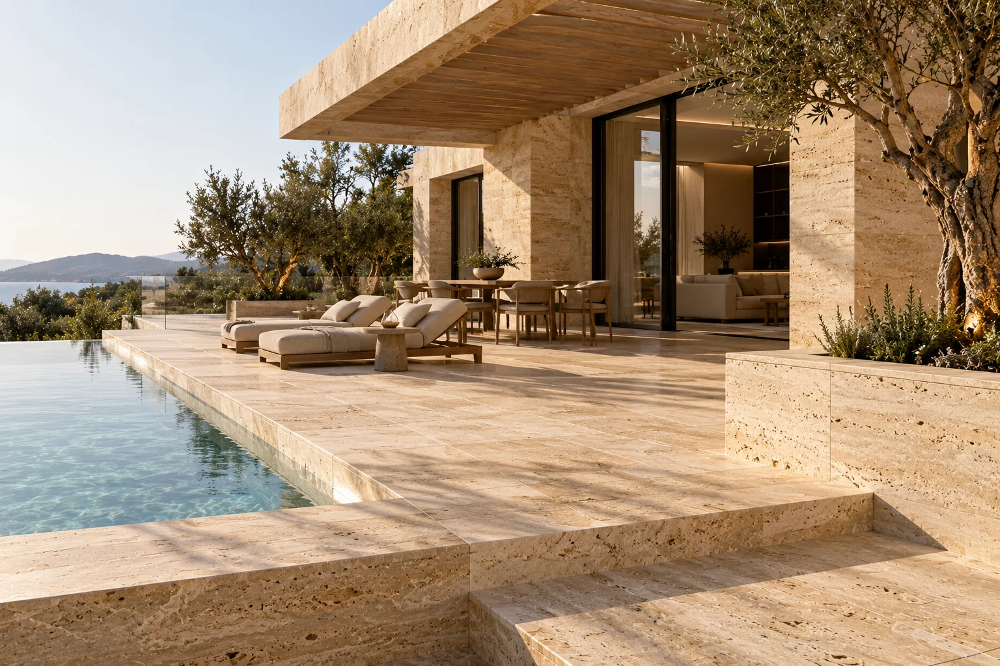

BEKAMAR / UYGULAMA ALANLARI
Mekânın
doğal ifadesi.
Doğal taş, porselen ve kuvars yüzeyler; yaşam alanlarına karakter, mimariye kalıcı bir değer katar.

01 / YAŞAMMutfak
Tezgâh ve ada tasarımlarında doğal dokuyu günlük yaşamın merkezine taşıyın.
KOLEKSİYONLARI İNCELE ↗
02 / RİTÜELBanyo
Taşın renk ve damarlarıyla dingin, kendine özgü bir atmosfer oluşturun.
ONYX KOLEKSİYONUNU GÖR ↗
03 / MİMARİİç mekân
Zemin, duvar ve mobilya yüzeylerinde malzemeler arasında bütünlük kurun.
DOĞAL TAŞLARI KEŞFEDİN ↗
04 / DIŞ MEKÂNDış mekân
Doğal taşın güçlü dokusuyla peyzaj, cephe ve açık alanlarda iz bırakın.
GRANİT KOLEKSİYONUNU GÖR ↗PROJENİZ İÇİN